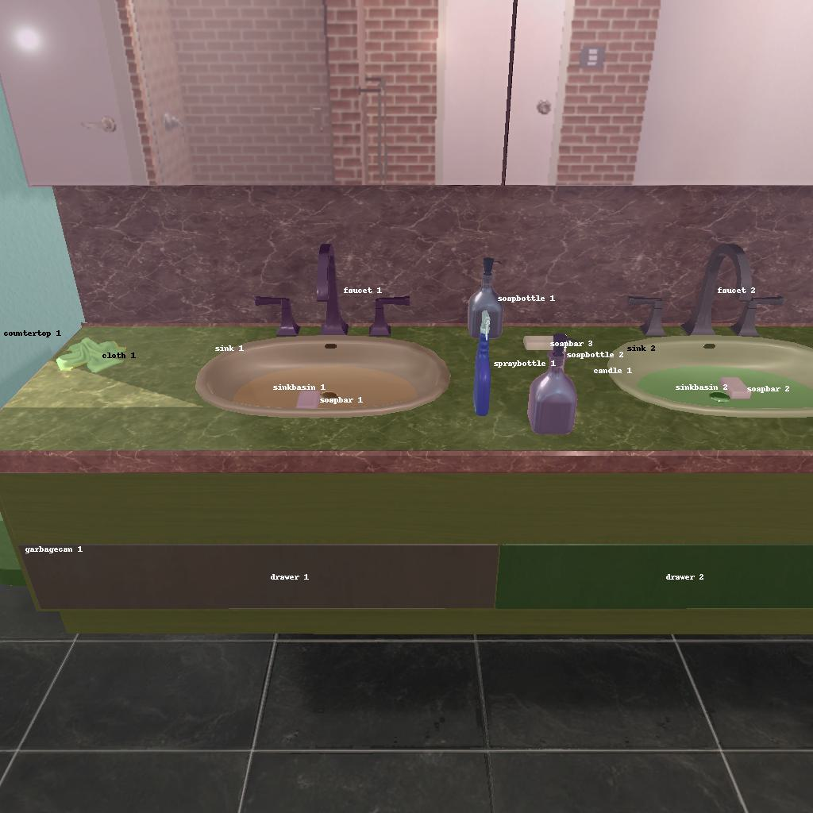

---------------------------------------------------------task: 27---------------------------------------------------------
--------------------------------------------------------------------------------------------------------------------------------------------------------------------
--------------------------------------------------------------------------------------------------------------------------------------------------------------------
Step:--------------------------------------------------------------------------5-------------------------------------------------------------------------------
----------------------------------------
VLM Prompt:
Image1:
**Instruction**
1. Analyze the provided image to identify all visible household objects, focusing on those relevant to the task description "find two soapbottle and put them in garbagecan."
2. Use the analysis of the image and the task hint "The agent must find an object of the desired type, pick it up, find the correct location to place it, put it down there, then look for another object of the desired type, pick it up, return to previous location, and put it down there with the other object." to answer the question: what is the most reasonable action in the choices for the task description "find two soapbottle and put them in garbagecan"?
4. Decide and write the answer using the template: The answer is: (i): , where i is the real number. If there is no desired object in the image, search every place based on **Initial Observation** to find the object. And if no one is exactly correct, choose a similar answer.
**Initial Observation**
You are in the middle of a room. Looking quickly around you, you can see countertop (1), sinkbasin (1-2), sink (1-2), garbagecan (1), drawer (1-2), toilet (1), handtowelholder (1)
**Answer Choices**
(1): go to sinkbasin 1
(2): go to sink 1
(3): go to garbagecan 1
(4): go to drawer 2
(5): go to sink 2
(6): go to sinkbasin 2
(7): go to toilet 1
(8): go to handtowelholder 1
(9): open drawer 1
(10): close drawer 1
(11): examine drawer 1
**Answer**
Let's think step by step by following the instructions.
----------------------------------------
----------------------------------------
Original Response:
The task is to find two soapbottle and put them in garbagecan. Based on the initial observation, we are in a room with various objects, including the garbagecan (1) where the soapbottles need to be placed. Looking at the image, we can see two soapbottles labeled as "soapbottle 1" and "soapbottle 3." They are located near the sinkbasin 1 and sinkbasin 2 respectively.
The most reasonable action would be to first go to one of the soapbottles, pick it up, then go to the garbagecan to put it down, and repeat the process for the second soapbottle. Since "go to soapbottle" is not an option, we will choose the closest action that leads us to the soapbottles.
The answer is: (1): go to sinkbasin 1, as it is the closest to soapbottle 1. Once we have soapbottle 1, we can then proceed to action (3): go to garbagecan 1 to place it inside, and then go to action (6): go to sinkbasin 2 to get soapbottle 3 and repeat the process.
----------------------------------------
----------------------------------------
>>> Refine Original VLM Response and Get Pure Action: go to sinkbasin 1, as it is the closest to soapbottle 1
----------------------------------------
-----------------------------------------------------------------
Running time: 10.593052864074707 seconds
Total Money: 9.742650000000008
-----------------------------------------------------------------
-----------------------------------------------------------------
Text Observation:Nothing happens.
-----------------------------------------------------------------
UNSUCCEED